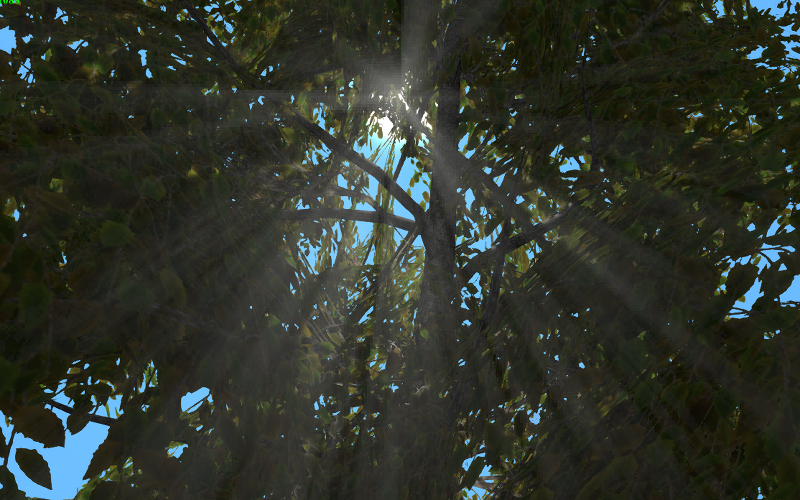
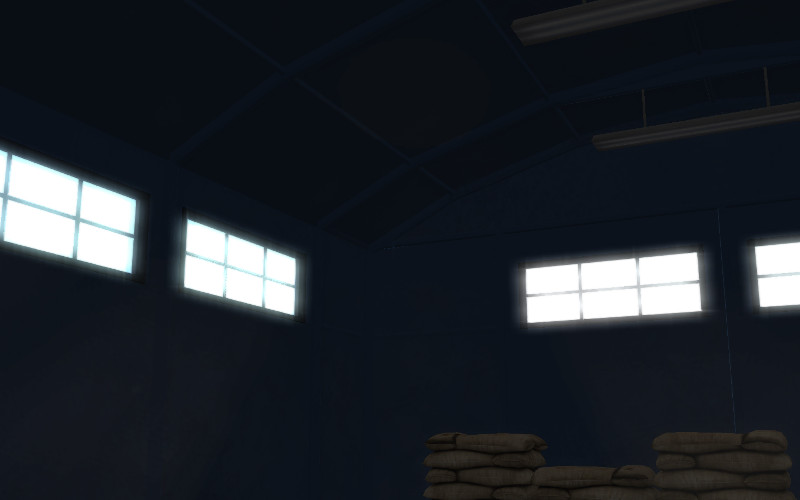

Спецэффекты¶
Содержание
Размытие при движении¶
Эффект размытия при движении (motion blur) служит целям увеличения реализма интерактивной сцены. Он проявляется при движении камеры или объектов в виде “смазывания” изображения.

Активация¶
Активировать панель Motion Blur во вкладке Render.
Дополнительные настройки¶
- Factor
Степень проявления эффекта. Чем выше значение, тем сильнее эффект размытия. Значение по умолчанию 0.01.
- Decay Threshold
Степень плавности размытия. Чем выше значение, тем более резким будет эффект. Значение по умолчанию 0.01.
Глубина резкости камеры¶
Эффект глубины резкости камеры (depth of field, DOF) акцентирует внимание зрителя на части сцены. Проявляется в размытии изображения ближе и дальше от фокуса камеры.

Активация¶
Выбрать активную камеру, перейти на панель ее настроек во вкладке
Camera(Object Data).Далее возможны два варианта:
На панели
Depth of Fieldв опцииFocusвыбрать объект, на котором будет сфокусирована камера. В этом случае при удалении или приближении к этому объекту будет происходит соответствующая коррекция фокуса камеры.На той же панели установить ненулевое значение
Distance(в метрах). В этом случае фокус камеры будет располагаться на заданном расстоянии от камеры и перемещаться вместе с ней.
Дополнительные настройки¶

- Focus
Задаёт объект, на котором фокусируется камера. Это поле пусто по умолчанию.
- Distance
Задаёт расстояние фокусировки. Этот параметр доступен только в том случае, если не установлен параметр
Focus(соответствующее поле пусто). По умолчанию расстояние до точки фокуса равно нулю.- Front Start
Задаёт расстояние (в метрах) от фокуса до ближней к камере плоскости, за которой начинает проявляться эффект размытия. Значение по умолчанию 1.0.
Этот параметр доступен только при включённой опции
High Quality (Bokeh).- Front End
Задаёт расстояние (в метрах) от фокуса до ближней к камере плоскости, за которой происходит полное размытие (сила размытия задаётся параметром
Power). Значение по умолчанию 5.0.- Rear Start
Задаёт расстояние (в метрах) от фокуса до дальней от камеры плоскости, за которой начинает проявляться эффект размытия. Значение по умолчанию 1.0.
Этот параметр доступен только при включённой опции
High Quality (Bokeh).- Rear End
Задаёт расстояние (в метрах) от фокуса до дальней от камеры плоскости, за которой происходит полное размытие (сила размытия задаётся параметром
Power). Значение по умолчанию 5.0.- Power
Сила размытия. Этот параметр может принимать значения от 0.1 до 10. Значение по умолчанию - 2.0.
- High Quality (Bokeh)
Включает высококачественный рендеринг эффекта глубины резкости. Активация этого параметра:
Включает эффект боке и опцию
Bokeh Intensity, которая может применяться для настройки силы этого эффекта.Включает параметры
Front StartиRear Start, предназначенные для установки мягкого перехода между расстоянием от камеры, за которым эффект размытия начинает проявляться, и расстоянием, за которым он достигает максимальной силы.Включает параметр
Foreground Blur, описанный ниже.
По умолчанию этот параметр деактивирован.
- Bokeh Intensity
Устанавливает силу эффекта боке. Значение может меняться от 0 до 1, значение по умолчанию - 0.3.
- Foreground Blur
При включении этого параметра движок размывает границы объектов, находящихся на переднем плане, увеличивая качество эффекта размытия за счёт некоторого снижения производительности. По умолчанию отключен.
Взаимное затенение¶
Эффект взаимного затенения (screen-space ambient occlusion, SSAO) применяется с целью воспроизведения сложного переотражения света от объектов. Пространство между близкими объектами менее доступно для рассеянного света и поэтому затеняется сильнее.

Активация¶
Активировать панель Ambient Occlusion (SSAO) во вкладке Render и выставить параметр опции Render Shadows в положение AUTO или ON на панели Render > Shadows.
Дополнительные настройки¶
- Radius Increase
Фактор умножения радиуса сферического сэмплинга при переходе от внутреннего кольца к внешнему. Значение по умолчанию 3.0.
- Use Hemisphere
Использовать для расчёта затенения полусферический сэмплинг вместо сферического. Помимо этого используется другой закон затенения.
- Use Blur Depth Test
Если активировано - используется размытие SSAO на основе буфера глубины. Иначе - размытие по квадрату 4х4 по соседним пикселям.
- Blur Depth Test Discard Value
Влияние разницы глубины сэмплов на их вес в размытии. Используется при активированном параметре
Use Blur Depth Test. Значение по умолчанию 1.0.- Influence
Степень проявленности эффекта взаимного затенения. Значение по умолчанию 0.7.
- Distance Factor
Фактор уменьшения проявленности эффекта взаимного затенения с расстоянием. Значение по умолчанию 0.0 (т.е. уменьшения нет).
- Samples
Количество сэмплов (чем больше, тем лучше качество, но меньше производительность). Значение по умолчанию 16.
Сумеречные лучи¶
Эффект сумеречных лучей (crepuscular rays, “god rays”) симулирует известное природное явление - свечение освещенных областей воздуха.
{kind=link}
Активация¶
Активировать панель God Rays во вкладке Render.
Дополнительные настройки¶
- Intensity
Степень проявленности эффекта. Значение по умолчанию 0.7.
- Maximum Ray Length
Фактор длины лучей. Определяет шаг сэмплов радиального размытия. Значение по умолчанию 1.0.
- Steps Per Pass
Количество шагов на один сэмпл. Значение по умолчанию 10.0.
Эффект засветки ярких деталей¶
Эффект засветки (Bloom) проявляется при наличии на экране элементов с большой разницей в яркости. Вокруг ярких деталей создается светящийся ореол.
{kind=link}
Активация¶
Активировать панель Bloom во вкладке Render.
Дополнительные настройки¶
- Use Adaptive
Включает расчёт адаптивной средней яркости. По умолчанию включено.
- Intensity
Интенсивность засветки. По умолчанию равна 1.0.
- Blur
Степень размытия засветки. По умолчанию равна 4.0.
- Edge Luminance
Граничное значение относительной яркости элемента, выше которого начинает проявляться эффект засветки. По умолчанию равно 1.0.
Подсветка контура (outlining)¶
В результате применения эффекта подсветки контура вокруг объекта появляется светящийся ореол произвольного цвета.

Активация¶
Эффект подсветки контура активируется программно через API. Может быть реализован как эффект постоянного свечения, так и затухающего, пульсирующего и любой другой модели. Для включения возможности подсветки объектов необходимо убедиться, что в панели Render > Object Selection поле Enable установлено в состояние ON или AUTO.
Дополнительные настройки¶
На панели Object > Selection and Outlining:
- Enable Outlining
Разрешить использование эффекта подсветки контура на конкретном объекте.
- Duration
Длительность анимации подсветки, сек. Значение по умолчанию 1.
- Period
Период повторения анимации подсветки, сек. Значение по умолчанию 1.
- Relapses
Количество итераций анимации подсветки. В случае 0 анимация будет повторяться бесконечно. Значение по умолчанию 0.
- Outline on Select
Активация анимации подсветки при выделении объекта. Для данного случая необходимо включить опцию
Selectable. При необходимости реализации собственной модели подсветки объекта следует отключить эту опцию во избежание конфликта.
На панели Render > Object Outlining:
- Factor
Толщина и яркость ореола, окружающего объект. Падает с уменьшением параметра. Значение по умолчанию 1.
При управлении через API настройки на панели Render > Object Outlining воспринимаются как настройки по умолчанию.
Свечение (glow)¶
Эффект возникновения ореола вокруг светящихся объектов, возникающий вследствие рассеивания света в атмосфере и внутри человеческого глаза.

Активация¶
Добавить в нодовый материал ноду B4W_GLOW_OUTPUT. Для включения возможности свечения в панели Render > Glow Materials опция Enable должна быть установлена в состояние ON или AUTO.
Дополнительные настройки¶
- Small Mask: Intensity
Интенсивность свечения по малой маске. Значение по умолчанию 2.0.
- Small Mask: Width
Ширина свечения по малой маске. Значение по умолчанию 2.0.
- Large Mask: Intensity
Интенсивность свечения по большой маске. Значение по умолчанию 2.0.
- Large Mask: Width
Ширина свечения по большой маске. Значение по умолчанию 6.0.
- Render Glow Over Transparent Objects
Отрисовывание эффекта свечения поверх прозрачных объектов. По умолчанию выключено.
Сглаживание¶
Сглаживание (anti-aliasing) необходимо для уменьшения влияния нежелательных артефактов рендеринга (“зубчатости”).

Активация¶
Выбрать один из профилей качества в поле AA Quality на панели Render > Anti-Aliasing:
None - антиалиасинг отключен,
Low, Medium, High - применяется антиалиасинг с низкими, средними и высокими параметрами качества соответственно.
Значение по умолчанию: Medium.
Дополнительные настройки¶
Итоговые настройки сглаживания назначаются композицией выбора профиля качества антиалиасинга и выбора профиля работы движка. При выборе профиля работы движка действуют следующие настройки:
низкое качество - антиалиасинг отключен,
высокое качество и максимальное качество - использовать алгоритм FXAA 3.11 (Fast Approximate Anti-Aliasing, Nvidia).